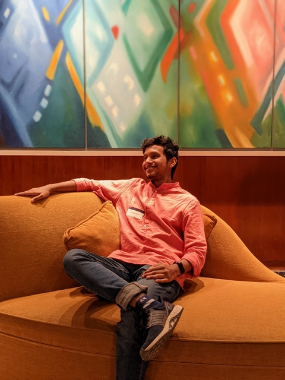

Graduate Research Assistant · University of Utah
Sep 2023 – Present
Developing deep learning methods for accelerated 3D LGE-MRI and T1 mapping reconstruction with Shireen Elhabian and Edward DiBella. Also contributing to grant proposal preparation.
Researcher & software engineer
Md Hasibul Husain Hisham
I research faster MRI reconstruction and build software for scientific discovery.
Computer Science PhD student at the University of Utah.
Based in Salt Lake City, originally from Bangladesh.

I work with Prof. Shireen Elhabian and Dr. Edward DiBella at the University of Utah on deep learning for medical imaging, with a focus on faster MRI acquisition and image reconstruction.
I received my MS in Computer Science from the University of Utah and my BSc in Computer Science and Engineering from Bangladesh University of Engineering and Technology (BUET). Previously, I worked as a software engineer at Optimizely and an adjunct lecturer at BUET.
My interests span deep learning, medical imaging, computer vision, and human-centered computing.
A research collaboration tool that turns lab discussions into searchable memory and critiques weak hypotheses, with multilingual processing and privacy guardrails.
AWS Bedrock · AgentCore · Multi-agent AI
Transferring movement between subjects with pose estimation and image-to-image translation. A project at the intersection of computer vision and dance.
Pose estimation · Generative adversarial networks
A dashboard for COVID-19 data and predictions. I worked primarily on data analysis and contributed to the frontend. Reached 16,716 unique visitors and led to a COMPASS ’22 paper.
MERN · Data analysis · Visualization
A helper and automated solver for the word puzzle. Solved 96.72% of evaluated words within six guesses, averaging 4.39 attempts across the word set.
Search · Algorithms
See also Google Scholar.
Med-Reasoner Workshop, NeurIPS 2026.
VIS × GenAI, VIS 2026.
Medical Imaging with Deep Learning (MIDL), 2025. Oral + poster, top 15%.
Scientific Reports, 2025.
MICCAI, 2024.
Genome Biology, 2024.
ACM SIGCAS/SIGCHI COMPASS, 2022.
Sep 2023 – Present
Developing deep learning methods for accelerated 3D LGE-MRI and T1 mapping reconstruction with Shireen Elhabian and Edward DiBella. Also contributing to grant proposal preparation.
Nov 2022 – Apr 2023
Taught Introduction to Programming (CSE102), Artificial Intelligence (CSE318), and Machine Learning (CSE472).
Jun 2022 – Jul 2023
Migrated a legacy Angular frontend to React. Worked with the Platform team on coding policies, technical debt, and bug fixes.
Feb 2022 – Apr 2023
Built Cypress end-to-end automated tests for IEIMS, an education management system for secondary and higher secondary students across Bangladesh.
Dec 2020 – Jan 2021
Analyzed Android and iOS game data with Tableau and Google Data Studio to identify patterns, trends, and correlations.
2023 – Present
2023 – 2025
CGPA: 4.00
2017 – 2022
CGPA: 3.80; final two semesters: 3.90.
University Merit Scholarship: 2017, 2018, 2021. Dean’s List Scholarship: 2018, 2019, 2021.
I enjoy dancing, running, and exploring new places. Dance has also been a way for me to bring people together, from organizing events with the BUET Dance Club to building community through the Bangladeshi Students Association at Utah.
Happy to connect about research, software, or a shared interest.